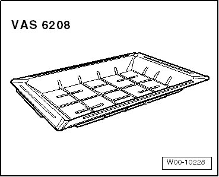
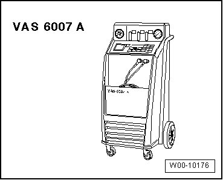
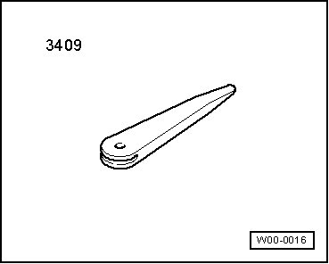
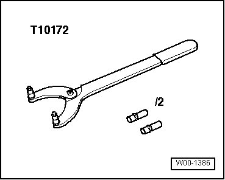
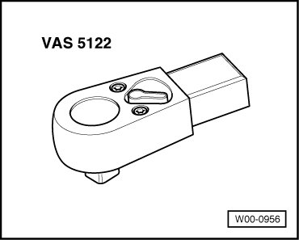
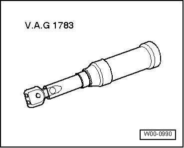
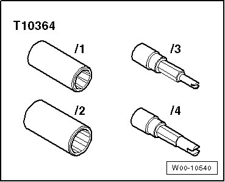

Heating and Air Conditioning: Tools and Equipment
Special Tools
Special tools, testers and auxiliary items required
• Torque Wrench (V.A.G 1331/)

• Drip Tray for Shop Crane (VAS 6208)

• Hose Clamps up to Diameter 40 mm (3093)

• A/C Service Station (VAS 6007A) or succeeding model.

• Trim Removal Wedge (3409)

• Pry Lever (T10039/1)

• Multi-point Adapter (3400)

• Counterhold (T10172) with Adapter (T10172/1)

• Reversible Ratchet (VAS 5122)

• Torque Wrench (V.A.G 1783) (2 to 10 Nm)

• Evacuating And Charging Valve Adapter Set (T10364)
